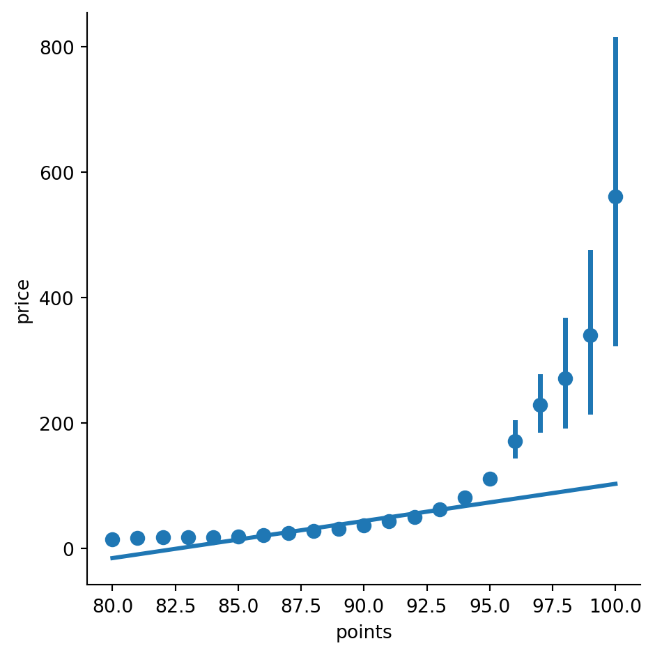
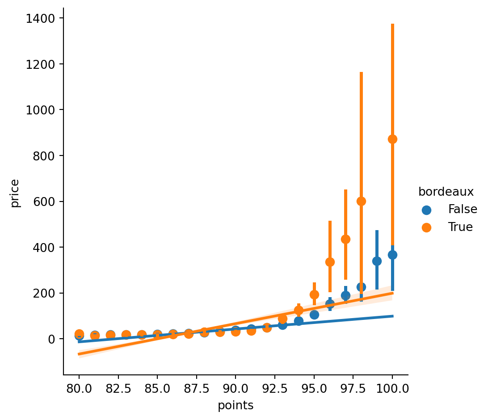
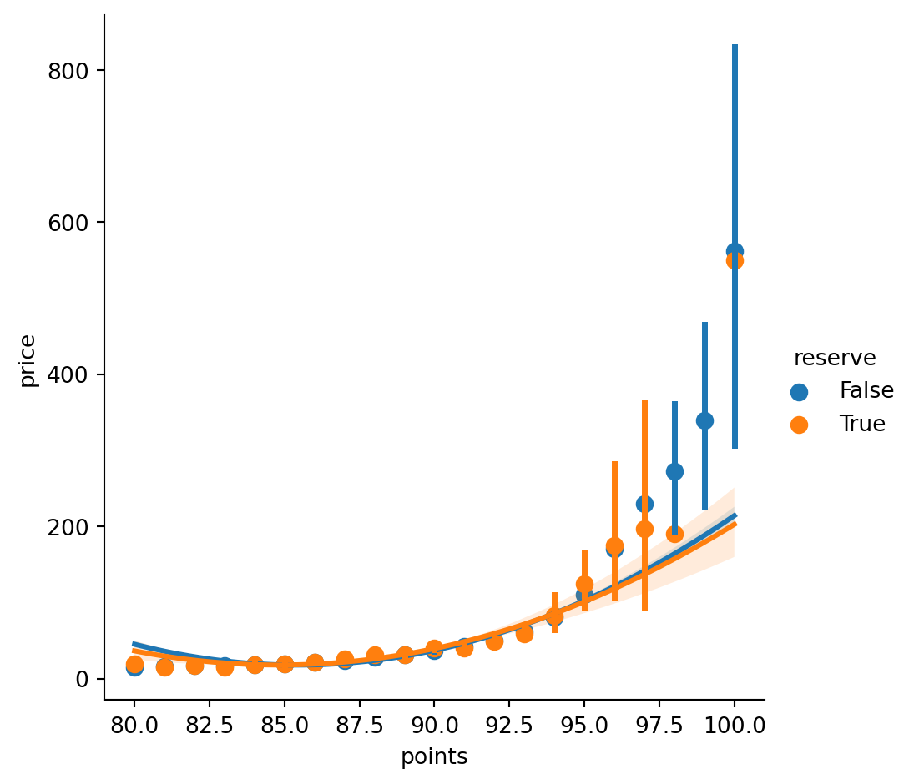
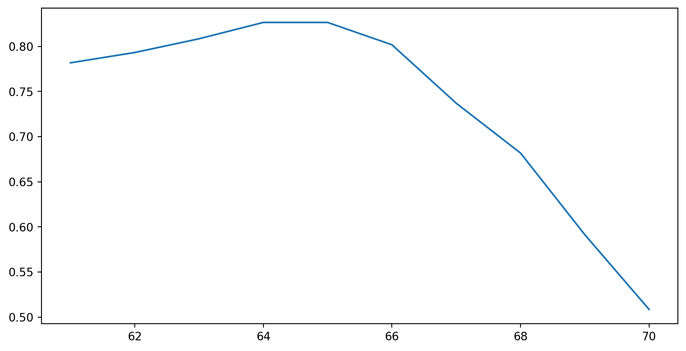
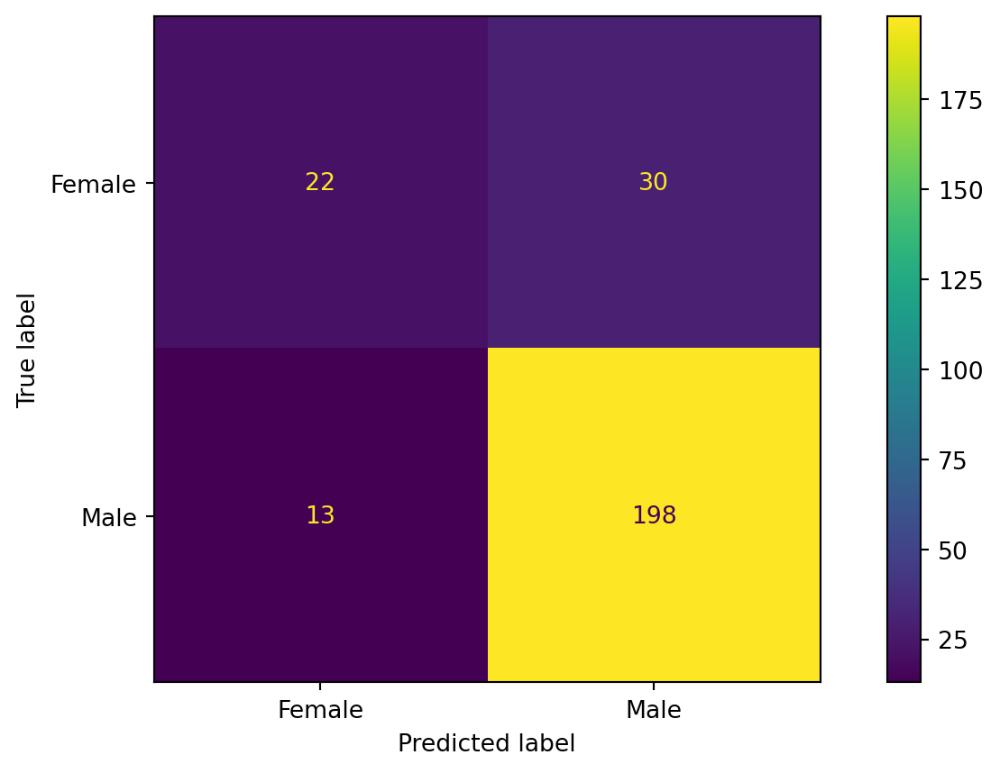
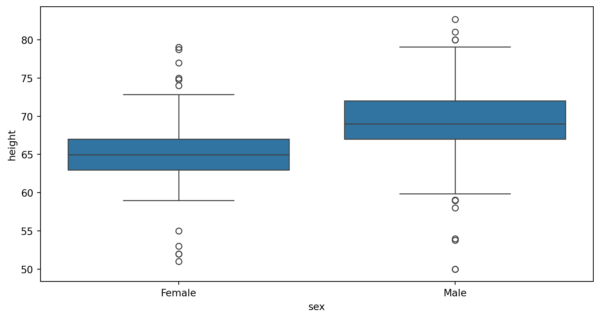
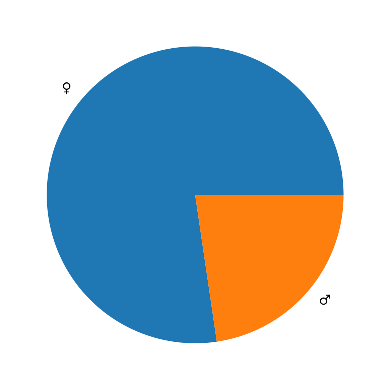

import subprocess # A base package we need to install other packages
import sys # A base package we need to install other packages
install = lambda package : subprocess.check_call([sys.executable,
'-m',
'pip',
'install',
package])Machine Learning in Python
Applied Machine Learning
Prerequisite
- I assume a Python/VS Code/Quarto workflow.
- Review this document
- I assume familiarity with Machine Learning in R
- Review these slides
Agenda
- Python Overview
- Review of Regression
- Classification
- Basic Feature Engineering
Quarto
- I switch from a R backend to a Python backend.
- I add the following below my title in my .qmd header:
jupyter: python3
title: "Machine Learning in Python"
subtitle: "Applied Machine Learning"
author: "Calvin"
jupyter: python3Pip
- In Python, we can typically install packages via
pip - It is more typical to use
pipat commandline.
python -m pip install sampleproject- Here is a ‘clean’ way to do so from within the Python
Packages
- I’ll build a list of packages then install them via a loop.
- Some (numpy, matplotlib) required for Quarto.
python_data_stack = ["numpy", "pandas", "matplotlib", "seaborn"]
r_data_stack = ['pyreadr', 'statsmodels']
packages = python_data_stack + r_data_stack + ["scikit-learn"]
_ = [install(package) for package in packages]- I use
_ =to discard the result of the process.- This ignores errors - remove to debug.
Import
- Python packages use
importrather thanlibrary() - Python base data stack
import numpy as np
import pandas as pd
import matplotlib.pyplot as plt
import seaborn as sns- R & statistics
import pyreadr
import statsmodels.api as sm
import statsmodels.formula.api as smfML Library
- There are 3.5 Python ML libraries that matter
- Scikit-learn, mainline ML
- Torch, deep learning
- Tensorflow, deep learning
- PySpark MLlib, MLOps
# Common to include parts of, not all of, sklearn
from sklearn.linear_model import LinearRegression
from sklearn.model_selection import train_test_split
from sklearn.metrics import confusion_matrix, ConfusionMatrixDisplayMany packages
- There’s a lot of imports here, we could cut back but…
- We would typical use only
sklearnnotstats_models- SM=statisical learning, SK=machine learning
- Use SM for equivalence with R.
- Typically use the module name as a function’s prefix.
- This resolves name collisions, like
dplyrandstats
✖ dplyr::filter() masks stats::filter() ✖ dplyr::lag() masks stats::lag() - This resolves name collisions, like
Setup
- We will use
pyreadrto read in an R dataset.- This is atypical but not difficult.
url = 'https://cd-public.github.io/courses/rmls25/dat/'
rds = 'wine.rds'
pyreadr.download_file(url + rds, rds)
wine = pyreadr.read_r(rds)[None]
wine.dropna(subset=['points','price'])
str(wine.info()) # string for slide formatting<class 'pandas.core.frame.DataFrame'>
RangeIndex: 89556 entries, 0 to 89555
Data columns (total 15 columns):
# Column Non-Null Count Dtype
--- ------ -------------- -----
0 id 89556 non-null float64
1 country 89503 non-null object
2 description 89556 non-null object
3 designation 64356 non-null object
4 points 89556 non-null float64
5 price 89556 non-null float64
6 province 89503 non-null object
7 region_1 71712 non-null object
8 region_2 33081 non-null object
9 taster_name 89556 non-null object
10 taster_twitter_handle 84953 non-null object
11 title 89556 non-null object
12 variety 89556 non-null object
13 winery 89556 non-null object
14 year 89556 non-null float64
dtypes: float64(4), object(11)
memory usage: 10.2+ MB'None'Review of Regression
Single Variable
- Pick the poshest province.
wine['bordeaux'] = wine['province'] == 'Bordeaux'
wine.head(2)| id | country | description | designation | points | price | province | region_1 | region_2 | taster_name | taster_twitter_handle | title | variety | winery | year | bordeaux | |
|---|---|---|---|---|---|---|---|---|---|---|---|---|---|---|---|---|
| 0 | 1.0 | Portugal | This is ripe and fruity, a wine that is smooth... | Avidagos | 87.0 | 15.0 | Douro | NaN | NaN | Roger Voss | @vossroger | Quinta dos Avidagos 2011 Avidagos Red (Douro) | Portuguese Red | Quinta dos Avidagos | 2011.0 | False |
| 1 | 2.0 | US | Tart and snappy, the flavors of lime flesh and... | NaN | 87.0 | 14.0 | Oregon | Willamette Valley | Willamette Valley | Paul Gregutt | @paulgwine | Rainstorm 2013 Pinot Gris (Willamette Valley) | Pinot Gris | Rainstorm | 2013.0 | False |
Regress
- Take a quick regression model over the wine.
m1 = sm.OLS(wine['points'], wine['price']).fit()
m1.summary()| Dep. Variable: | points | R-squared (uncentered): | 0.414 |
| Model: | OLS | Adj. R-squared (uncentered): | 0.414 |
| Method: | Least Squares | F-statistic: | 6.331e+04 |
| Date: | Fri, 27 Dec 2024 | Prob (F-statistic): | 0.00 |
| Time: | 01:13:50 | Log-Likelihood: | -5.0481e+05 |
| No. Observations: | 89556 | AIC: | 1.010e+06 |
| Df Residuals: | 89555 | BIC: | 1.010e+06 |
| Df Model: | 1 | ||
| Covariance Type: | nonrobust |
| coef | std err | t | P>|t| | [0.025 | 0.975] | |
| price | 1.0169 | 0.004 | 251.623 | 0.000 | 1.009 | 1.025 |
| Omnibus: | 199847.674 | Durbin-Watson: | 0.598 |
| Prob(Omnibus): | 0.000 | Jarque-Bera (JB): | 3451086699.000 |
| Skew: | -20.492 | Prob(JB): | 0.00 |
| Kurtosis: | 963.819 | Cond. No. | 1.00 |
Notes:
[1] R² is computed without centering (uncentered) since the model does not contain a constant.
[2] Standard Errors assume that the covariance matrix of the errors is correctly specified.
Sklearn
- I’m much fonder of
sklearnfor this sort of thing.
s1 = LinearRegression().fit(wine[['points']],wine['price'])
f'Intercept: {s1.intercept_}, Coefficients: {s1.coef_}''Intercept: -489.2508038352233, Coefficients: [5.92019824]'Let’s draw it
- Python ggplot is
plotnine - I prefer Seaborn (
sns) - Also:
matplotlib - Also:
plotly
sns.lmplot(x='points', y='price',
data=wine, scatter=True,
x_bins=range(80,101))
Multiple regression
- We can literally use the exact same formula in
smf - I am unaccustomed to doing multiple regressions without interaction.
- Moving on.
m2 = smf.ols('price ~ points + bordeaux', data=wine).fit()
m2.summary()| Dep. Variable: | price | R-squared: | 0.165 |
| Model: | OLS | Adj. R-squared: | 0.165 |
| Method: | Least Squares | F-statistic: | 8857. |
| Date: | Fri, 27 Dec 2024 | Prob (F-statistic): | 0.00 |
| Time: | 01:13:56 | Log-Likelihood: | -4.5673e+05 |
| No. Observations: | 89556 | AIC: | 9.135e+05 |
| Df Residuals: | 89553 | BIC: | 9.135e+05 |
| Df Model: | 2 | ||
| Covariance Type: | nonrobust |
| coef | std err | t | P>|t| | [0.025 | 0.975] | |
| Intercept | -491.8296 | 3.970 | -123.897 | 0.000 | -499.610 | -484.049 |
| bordeaux[T.True] | 8.7090 | 0.661 | 13.182 | 0.000 | 7.414 | 10.004 |
| points | 5.9451 | 0.045 | 132.878 | 0.000 | 5.857 | 6.033 |
| Omnibus: | 209113.996 | Durbin-Watson: | 1.653 |
| Prob(Omnibus): | 0.000 | Jarque-Bera (JB): | 5148121806.319 |
| Skew: | 22.820 | Prob(JB): | 0.00 |
| Kurtosis: | 1176.693 | Cond. No. | 2.66e+03 |
Notes:
[1] Standard Errors assume that the covariance matrix of the errors is correctly specified.
[2] The condition number is large, 2.66e+03. This might indicate that there are
strong multicollinearity or other numerical problems.
How about with an interaction?
m3 = smf.ols('price ~ points * bordeaux', data=wine).fit()
m3.summary()| Dep. Variable: | price | R-squared: | 0.177 |
| Model: | OLS | Adj. R-squared: | 0.177 |
| Method: | Least Squares | F-statistic: | 6421. |
| Date: | Fri, 27 Dec 2024 | Prob (F-statistic): | 0.00 |
| Time: | 01:13:56 | Log-Likelihood: | -4.5609e+05 |
| No. Observations: | 89556 | AIC: | 9.122e+05 |
| Df Residuals: | 89552 | BIC: | 9.122e+05 |
| Df Model: | 3 | ||
| Covariance Type: | nonrobust |
| coef | std err | t | P>|t| | [0.025 | 0.975] | |
| Intercept | -460.8522 | 4.034 | -114.233 | 0.000 | -468.759 | -452.945 |
| bordeaux[T.True] | -665.8277 | 18.763 | -35.486 | 0.000 | -702.604 | -629.052 |
| points | 5.5958 | 0.045 | 123.063 | 0.000 | 5.507 | 5.685 |
| points:bordeaux[T.True] | 7.6585 | 0.213 | 35.972 | 0.000 | 7.241 | 8.076 |
| Omnibus: | 207559.719 | Durbin-Watson: | 1.666 |
| Prob(Omnibus): | 0.000 | Jarque-Bera (JB): | 5054712547.121 |
| Skew: | 22.390 | Prob(JB): | 0.00 |
| Kurtosis: | 1166.014 | Cond. No. | 1.27e+04 |
Notes:
[1] Standard Errors assume that the covariance matrix of the errors is correctly specified.
[2] The condition number is large, 1.27e+04. This might indicate that there are
strong multicollinearity or other numerical problems.
Sklearinteraction
sklearndefaults to multiple regression.
wine['points_bordeaux'] = wine['points'] * wine['bordeaux']
s3 = LinearRegression().fit(wine[['points','bordeaux']],
wine['price'])
f'Intercept: {s3.intercept_}, Coefficients: {s3.coef_}''Intercept: -491.829643567971, Coefficients: [5.9451492 8.70900299]'Let’s draw it
sns.lmplot(x='points', y='price',
data=wine, scatter=True,
x_bins=range(80,101), hue='bordeaux')
Moving to an ML framework
Split sample using Sklearn
- Vs R, with a proliferation of libraries, Python ML is concentrated.
- There are a few main libraries,
Sklearnthe first and most popular - So modelling and partitioning are all in
sklearn, vsstatsandcaret
random_seed = 505
train, test = train_test_split(wine, random_state=random_seed)
print(test.head()) id country description \
65856 95817.0 US The appellation continues to impress with this...
71192 103509.0 Romania This easy-drinking red wine has aromas of cher...
29519 43024.0 Portugal A blend of Tinta Roriz and the local Jaen, thi...
23597 34478.0 US This is the producer's annual unoaked version ...
42843 62706.0 Germany Delicate quince and apple aromas are fringed w...
designation points price province \
65856 Frank Johnson 90.0 14.0 California
71192 Dreambird 86.0 7.0 Viile Timisului
29519 Beyra Colheita Tinto 87.0 12.0 Beira Interior
23597 Acero Don Miguel Vineyard 88.0 29.0 California
42843 NaN 87.0 13.0 Mosel
region_1 region_2 taster_name \
65856 Dry Creek Valley Sonoma Virginie Boone
71192 NaN NaN Jeff Jenssen
29519 NaN NaN Roger Voss
23597 Russian River Valley Sonoma Virginie Boone
42843 NaN NaN Anna Lee C. Iijima
taster_twitter_handle \
65856 @vboone
71192 @worldwineguys
29519 @vossroger
23597 @vboone
42843 NaN
title variety \
65856 Wines Gone Wild 2014 Frank Johnson Sauvignon B... Sauvignon Blanc
71192 Cramele Recas 2014 Dreambird Merlot (Viile Tim... Merlot
29519 Rui Roboredo Madeira 2014 Beyra Colheita Tinto... Portuguese Red
23597 Marimar Estate 2014 Acero Don Miguel Vineyard ... Chardonnay
42843 Ulrich Langguth 2012 Riesling (Mosel) Riesling
winery year bordeaux points_bordeaux
65856 Wines Gone Wild 2014.0 False 0.0
71192 Cramele Recas 2014.0 False 0.0
29519 Rui Roboredo Madeira 2014.0 False 0.0
23597 Marimar Estate 2014.0 False 0.0
42843 Ulrich Langguth 2012.0 False 0.0 Compare RMSE across models
- Retrain the models on the training set only
formulas = ['price ~ points',
'price ~ points + bordeaux',
'price ~ points * bordeaux']
ms = [smf.ols(f, data=train).fit() for f in formulas]- Test them all under the same conditions.
def rmse(m):
residuals_sq = (test['price'] - m.predict(test)) ** 2
mse = np.mean(residuals_sq)
return mse ** .5
[rmse(m) for m in ms][np.float64(38.253198876742374),
np.float64(38.208086530739),
np.float64(37.80098647775707)]Exercise Problems
- Bonus++. Pick a non-Bordeaux category.
- We write a quick reserve-checker and apply it.
- Basically Python wasn’t told all the data was textual
- Use
strandlower
- Use
- Then use Pythonic
inwith a list of names
applyis likemutate, in a way.
is_reserve = lambda x: str(x).lower() in ['reserve','reserva','riserva']
wine['reserve'] = wine['designation'].apply(is_reserve)via Seaborn
sns.lmplot(wine, x='points', y='price', x_bins=range(80,101), hue='reserve',
x_estimator=np.mean, order=2) # polynomail regression, why not
Classification and Ethics
The math of it…
- This problem used a R library to get data.
- That R library is open source,
- It has reasonable documentation, and
- It’s GitHub is linked from documentation.
- I spent 30 seconds on a search engine to find it.
Partition our Data
- The
.rdafile is at this url:- https://github.com/rafalab/dslabs/blob/master/data/heights.rda
- Change
blobtorawto download directly.
url = 'https://github.com/rafalab/dslabs/raw/master/data/'
rds = 'heights.rda'
pyreadr.download_file(url + rds, rds)
heights = pyreadr.read_r(rds)['heights']
random_seed = 505
train, test = train_test_split(heights, random_state=random_seed)Note: this vignette is adapted from this book
Guessing
- Let’s start by developing the simplest possible machine algorithm: guessing the outcome.
y_hat = np.random.choice(['Male', 'Female'], len(test))Recall:
Accuracy
- The overall accuracy is simply defined as the overall proportion that is predicted correctly:
np.mean(y_hat == test['sex'])np.float64(0.49809885931558934)- What would we have expected the accuracy to be?
- What much would we have expected accuracy to deviate from that expectionation?
Let’s do better…
hs = heights.groupby('sex')['height']
hs.std(), hs.mean()(sex
Female 3.760656
Male 3.611024
Name: height, dtype: float64,
sex
Female 64.939424
Male 69.314755
Name: height, dtype: float64)A simple predictive model
- Idea: Predict
'Male'if observation is within 2 standard deviations
male_mean_less_2sd = hs.mean()['Male'] - 2*hs.std()['Male']
y_hat = heights['height'].apply(lambda x : 'Male' if x > male_mean_less_2sd else 'Female')
print(male_mean_less_2sd, np.mean(heights['sex'] == y_hat))62.09270759210095 0.7933333333333333- The accuracy goes up from ~0.50 to about ~0.80!!
Let’s optimize
cutoff = list(range(61,71))
def get_accuracy(y):
f = lambda x : 'Male' if x > y else 'Female'
y_hat = heights['height'].apply(f)
return np.mean(heights['sex'] == y_hat)
accuracy = list(map(get_accuracy, cutoff))
accuracy[np.float64(0.7819047619047619),
np.float64(0.7933333333333333),
np.float64(0.8085714285714286),
np.float64(0.8266666666666667),
np.float64(0.8266666666666667),
np.float64(0.8019047619047619),
np.float64(0.7371428571428571),
np.float64(0.6819047619047619),
np.float64(0.5914285714285714),
np.float64(0.5085714285714286)]Optimal Cutoff
best_cutoff = cutoff[np.argmax(accuracy)]
_ = plt.plot(cutoff, accuracy), print('Optimal cutoff is', best_cutoff)Optimal cutoff is 64
- Should we be cutting at an integer?
Apply & Evaluate
test['y_hat'] = test['height'].apply(lambda x : 'Male' if x > best_cutoff else 'Female')
print('Accuracy is', np.mean(test['sex'] == test['y_hat']))Accuracy is 0.8365019011406845Confusion matrix
ConfusionMatrixDisplay.from_predictions(test['sex'], test['y_hat'])
Took 7 lines / 350+ characters of handwritten ggplot
Accuracy by sex
test['acc'] = test['sex'] == test['y_hat']
test.groupby('sex')['acc'].mean()sex
Female 0.423077
Male 0.938389
Name: acc, dtype: float64It’s raining men.
Debrief
_ = sns.boxplot(heights, x='sex',y='height')
_ = plt.pie(heights['sex'].value_counts(), labels=['♀','♂'])